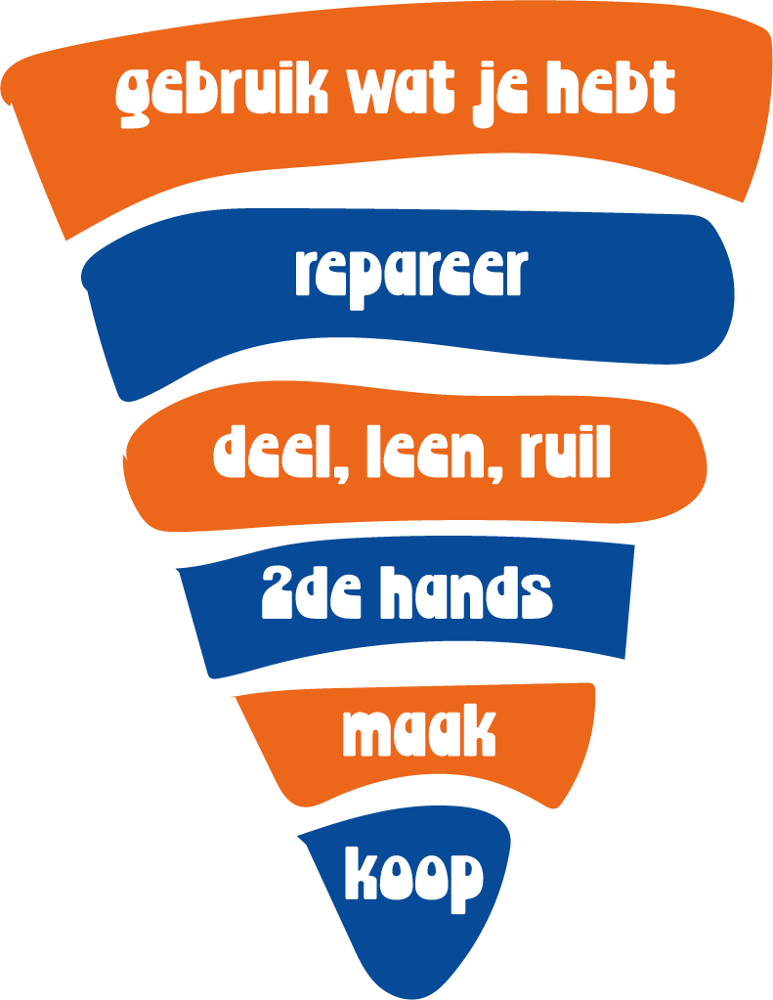
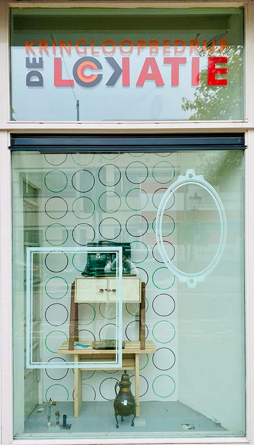
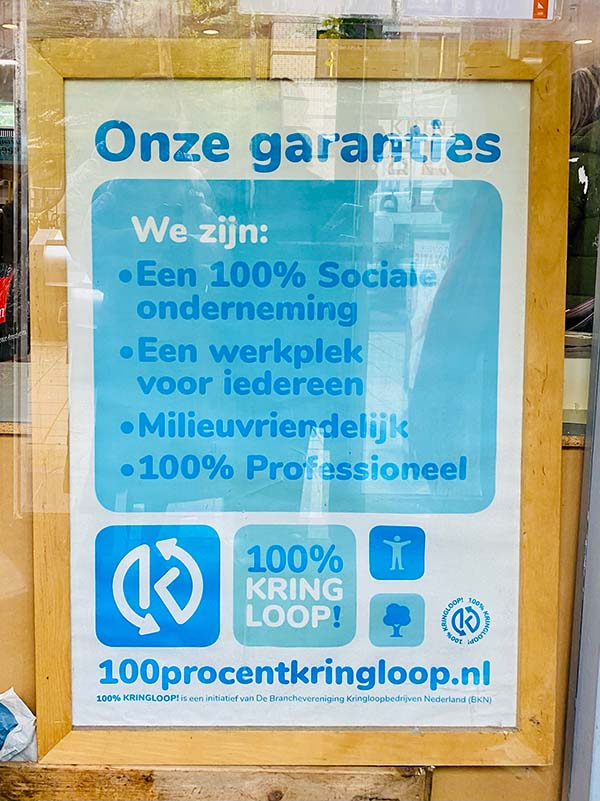
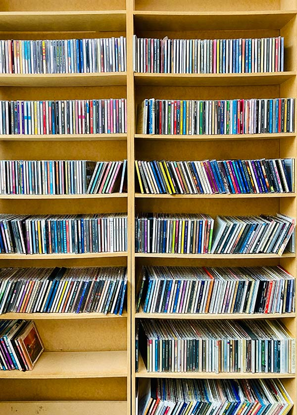
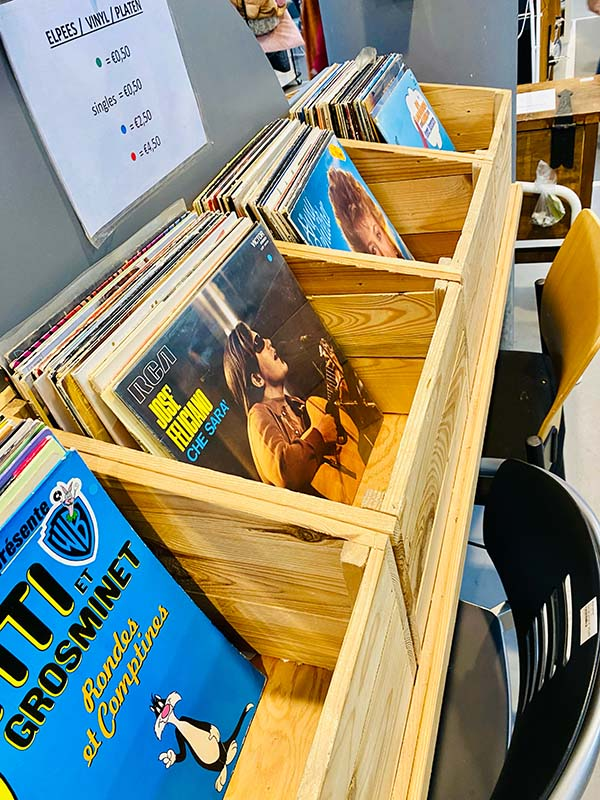
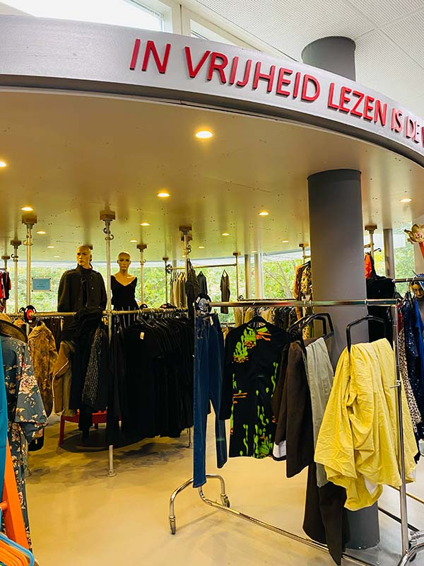

LOVE THE WORLD
We moeten dringend actie ondernemen tegen ons milieu om onze toekomst veilig te stellen. Ik heb voldoende informatie en tips verzameld over hoe je milieuvriendelijker kunt zijn.
PIRAMINDER
gebruik piraminder babkaakbakabaakbakjsabjs
DE LOKATIE KRINGLOOPBEDRIJF
Wat is een betere plek om te zijn dan een kringloopwinkel. Mijn favoriete kringloopwinkel is De Lokatie en heeft winkels op verschillende locaties in Amsterdam. Je vindt er muziek, films, kleding, woonartikelen en nog veel meer! Het is mijn go-to kringloopwinkel waar ik regelmatig kom. Ik koop spullen maar geef ook spullen weg die ik niet meer gebruik en hoop er iemand anders blij mee te maken. Ik raad mensen echt aan om een kringloopwinkel een kans te geven. Het is niet raar of vies. Je bent je bewust van wat je koopt.
    